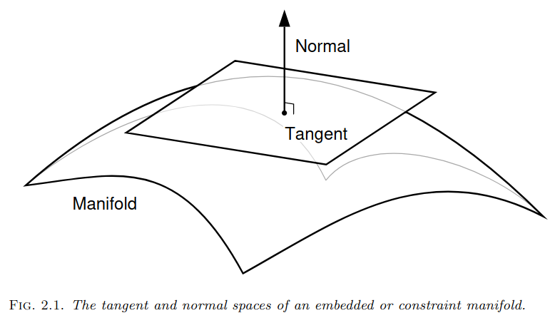
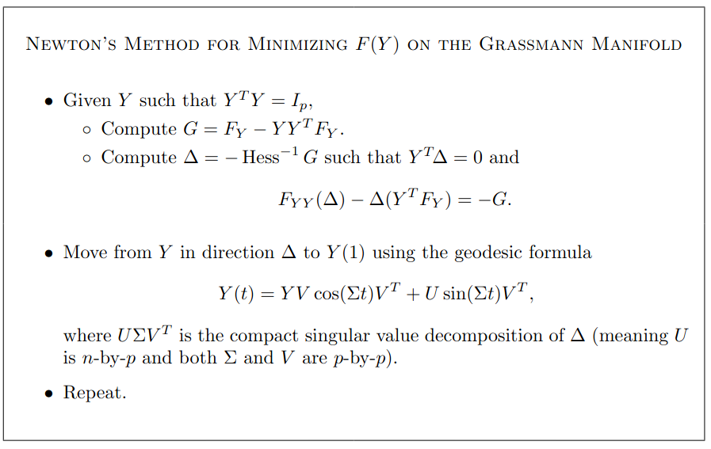
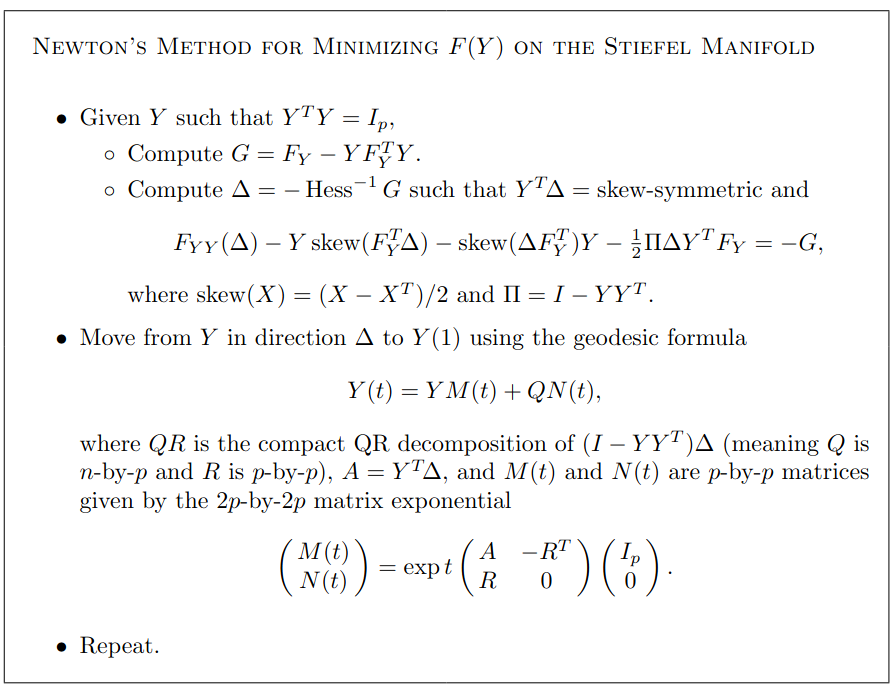
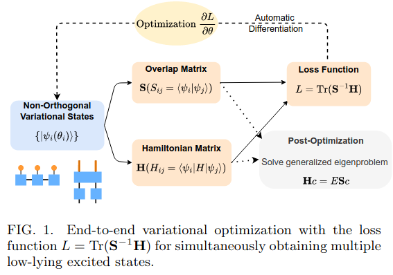

提出一种通过最小化交叠矩阵逆的乘积，寻找多体波函数基态的算法。
Link: * A Unified Variational Framework for Quantum Excited States * Spectral Inference Networks: Unifying Deep and Spectral Learning * The Geometry of Algorithms with Orthogonality Constraints * Accurate computation of quantum excited states with neural networks
Background
从最初的牛顿迭代法出发，首先在1998年提出一种基于矩阵本征值的迭代方法，然后deepmind团队拓展该方法，用于求解薛定谔方程。
众说周知，牛顿梯度下降法是结合梯度信息求解优化问题的开篇之作，之后为了克服阻措并且应用于大规模优化提出随机梯度下降以及之后动量的梯度下降，以及为在数值求解微分方程中提升准确度提出龙革-库塔方法。那么，新的方法是为了处理什么困难，是基于什么样的物理含义？
新的算法作用于 stiefel 和 grassmann manifolds，对于一个有约束的优化问题，将解空间去除约束部分，则得到这两种流形。用以处理最小化F(Y)问题，其中存在约束条件YY−1 = I，假设有F(Y) = F(YQ)则对应为Grassmann manifold，否则为 Stiefel manifold。修改的出发点是将有约束问题转化为无约束问题，进行处理。

整体流程为首先初始化选取初始点，然后通过计算梯度，逐渐更新逼近最小值。切向量Δ通过YTΔ + ΔTY = 0定义，对于法向量通过最小化任意切向量的内积寻找min Tr(Δ1TΔ2)。在文章中有很多的内容，用于具体说明计算法向量的方法。
 
接下来将本质值作为求解目标。 $$\begin{align} &\max_\mathbf u \mathbf u^T \mathbf A \mathbf u,\quad \mathbf u^T \mathbf u =1 \\ &\max_\mathbf u \frac{\mathbf u^T \mathbf A \mathbf u}{\mathbf u^T \mathbf u} \end{align}$$
本征向量的集合U = (u1, u2, u3⋯uN)，对应最大特征值的特征向量为： $$\begin{align} & \mathbf u_i = \arg \max_\mathbf u \frac{\mathbf u^T \mathbf A \mathbf u}{\mathbf u^T \mathbf u} \\ & \max_\mathbf U \text{Tr}\left((\mathbf U^T \mathbf U)^{-1}\mathbf U^T \mathbf A \mathbf U\right) \\ \end{align}$$
展开写为： $$\begin{align} \operatorname*{max}_{\mathbf{U}}\operatorname{Tr}\left(\left(\sum_{i}\mathbf{u}^{i T}\mathbf{u}^{i}\right)^{-1}\sum_{i j}A_{i j}\mathbf{u}^{i T}\mathbf{u}^{j}\right) \end{align}$$
在特征向量中，其中操作为内积，拓展到特征函数，需要引入核函数$\langle f,g\rangle\stackrel{\cdot}{=}\int f(\mathbf{x})g(\mathbf{x})p(\mathbf{x})d\mathbf{x}\,=\,\mathbb{E}_{\mathbf{x}\sim p(\mathbf{x})}\dot{[f(\mathbf{x})g(\mathbf{x})]}$，构造对称操作线性函数𝒦[f](x) = 𝔼x′[k(x, x′)f(x′)]：
$$\begin{align} \operatorname*{max}_{\mathbf{u}}\operatorname{Tr}\left(\mathbb{E}_{\mathbf{x}}\left[\mathbf{u}(\mathbf{x})\mathbf{u}(\mathbf{x})^{T}\right]^{-1}\mathbb{E}_{\mathbf{x},\mathbf{x}^{\prime}}\left[k(\mathbf{x},\mathbf{x}^{\prime})\mathbf{u}(\mathbf{x})\mathbf{u}(\mathbf{x}^{\prime})^{T}\right]\right) \end{align}$$
其中k(x, x′)是定义的核函数。
Method
从Ns个非正交态{|ψi(θi)⟩}的集合中，最小化L = Tr(S−1H)，其中θi是变分参数，
$$\begin{align} &{\bf S}_{i j}(\vec{\theta})=\langle\psi_{i}(\vec{\theta}_{i})|\psi_{j}(\vec{\theta}_{j})\rangle,\\ &{\bf H}_{i j}(\vec{\theta})=\langle\psi_{i}(\vec{\theta}_{i})|H|\psi_{j}(\vec{\theta}_{j})\rangle \end{align}$$

工作流程如上图片，通过张量矩阵乘积态表示波函数，然后计算overlap matrix和hamilitonian matrix，通过优化算法计算函数的损失。